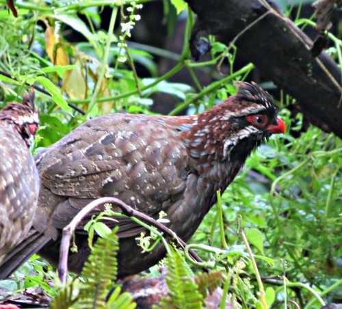
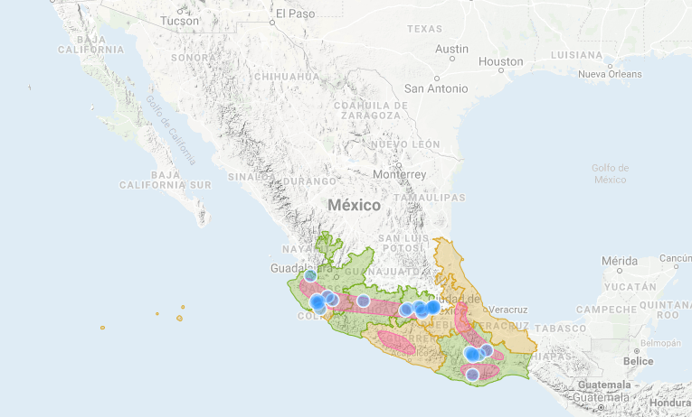
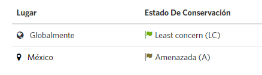

Descripción
Es una de las especies más grandes de codornices americanas, alcanzando una longitud de 29 a 38 centímetros, y un peso de 350 a 465 gramos. Las características principales que
la distinguen son su cola larga de 12 timoneras, que pueden ser casi de la misma longitud que el ala extendida, además de una cresta eréctil. El pico, patas y piel alrededor
de los ojos son de color rojo brillante. Tanto la hembra como el macho tienen el mismo color de plumaje. La garganta, la frente y las coberteras de los oídos son de color negro.
Es posible que las hembras sean de menor tamaño y su cola sea más corta. La cresta de los machos puede ser más grande.

Hábitat
Dendrortyx macroura tiene preferencia por bosques de coníferas y bosques mesófilos de montaña. Se encuentra principalmente en sitios húmedos siempre con un estrato arbustivo denso,
aunque el estrato arbóreo puede ser abierto.
En su área de distribución se encuentran climas templados y húmedos con la temporada lluviosa de mayo a octubre. La temperatura media anual se encuentra en el rango de 12 a 18o C,
y la precipitación anual es de alrededor de 1,500 mm, dependiendo de la localidad.

Situación actual

Chordata: Son un filo del reino animal caracterizado por la presencia de una cuerda dorsal o notocorda. Galliformes: Es un clado de aves neognatas con categoría taxonómica de orden que cuenta con 283 especies. Dendrortyx: Género de ave galliforme de la familia Odontophoridae que agrupa tres especies conocidas vulgarmente como perdices del Nuevo Mundo.
 Aves en peligro de extinción
Aves en peligro de extinción